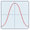

This tutorial provides a step-by-step guide for new users on how to load, manipulate, visualise and analyse a 3D facial image using Cliniface. The outline of the process is as follows:
The sections marked optional are not required for viewing and analysing the model in this tutorial, but may be necessary or useful when working with your own 3D facial images. This tutorial will use an example model for which these actions are not needed.
The first step is to load an image. Cliniface accepts 3D images stored in a wide variety of image formats. In this tutorial, we will use one of the provided example images in the examples directory which is located in Cliniface's installation directory. Select File->Open from Cliniface's menubar, or click the corresponding icon on the toolbar. Navigate to the directory "examples/bella_raw", select the file "bella_raw.obj", then click the Open button. After a few moments of processing, the image will be shown in Cliniface's main viewer:
More than one model can be loaded at once and the models will be shown together in the same viewer. The currently selected model is indicated by the blue wireframe box surrounding it and its filepath will be shown in Cliniface's main window title. To select a different loaded model, simply click on it, or use the drop-down list underneath the viewer to select it by its filename. By default, when selecting a model, the camera will be refocused onto it (this behaviour can be changed in Cliniface's preferences). To deselect the current model without selecting another, left double-click anywhere on the background. Ensuring that the correct model is selected is important since actions are generally only ever carried out on the currently selected model. Actions will be disabled if there is no model selected, or if the action cannot be carried out for whatever reason on the currently selected model.
The currently selected model can be moved off to one side into its own viewer by clicking the block arrows underneath the viewer (to the left and right of the drop-down filename selector). This can be useful for decluttering or for comparing two different models without them overlapping. The icons just to the immediate left and right of the drop-down filename selector will make a copy of a view of the selected model and place it in the corresponding viewer to the left or right of the main viewer. This can be useful if wanting to compare different visualisations on the same model. Note that changes to the underlying model will be reflected in all of its views (there is only a single model underlying all of its views). To "remerge" a view, simply use the move buttons to move the selected view into the adjacent viewer - if another view of the same model exists in the target viewer, it will be removed with the view being moved in taking its place.
Once face/landmark detection has been performed (see below) and Cliniface understands the orientation of the face, the frontal, left, and right profile views become available. These buttons are found next to the Reset Camera button in the main toolbar, or can be accessed from the Camera menu. These predefined views cause the camera to reposition itself to show the corresponding aspects of the face. The keyboard shortcuts for these views use the cursor keys; Up for the front view, Left for the left profile (with subject looking right), and Right for the right profile (with subject looking left). Prior to landmark detection, these functions simply provide the front, left, and right views of the loaded model in its current orientation.
After loading a model, the camera will be focused at the centre of its bounding box. To reset the camera to this view, click the Reset Camera button in the main toolbar, or press the spacebar. Use the mouse to move the camera around the scene. Left-clicking and dragging rotates the camera around the current focus. Right-clicking and dragging pans the camera, while using the mouse wheel or clicking the middle button and dragging performs a zoom by moving the camera along its "dolly" i.e. toward or away from the camera focus. If your mouse doesn't have a mouse wheel, or a middle (or a right) button, you can hold the SHIFT key while left-clicking and dragging to pan the camera, and hold the CTRL key while clicking and dragging to dolly zoom the camera.
The camera can be refocused onto any part of the model by right-clicking on the model's surface and selecting Set Camera Focus from the context menu. Alternatively, press the F key while the mouse cursor is hovered over where you want the focus to be set.
Cliniface offers a set of tools to help clean up the surface geometry of selected models. Undertaking these steps may not be necessary depending on the quality or provenance of the image data. The tools are:
See the corresponding sections linked to above for how these tools function. There may be more tools available to you than listed in this documentation depending on what plugins are loaded.
In the following step, the face and its landmarks must be detected, however this can sometimes fail or can result in the inaccurate placement of landmarks if the subject's face is not oriented to be looking at the camera. By default, clicking and dragging in the viewer moves the camera around with respect to the scene. To reposition the model or reorient it in the scene, enter model movement mode by selecting Transform->Move Model from the menubar or by clicking the corresponding toolbar icon, or by pressing the Z key. In this mode, viewer interactions by clicking and dragging the mouse on the model will cause the model to move in the corresponding fashion; that is, left-clicking and dragging will rotate the model about its centre, right-clicking and dragging will move the model laterally in the view plane, and using the mouse wheel with the cursor hovered over the model or middle-clicking and dragging on the model (or holding CTRL while clicking and dragging with the left/right buttons) will move the model backwards or forwards along the camera's view vector.
A standard position and orientation is defined for a face after landmark placement has been performed (see below). When moving the model around, it's position and orientation can always be restored to this standard position by clicking Transform->Transform to Standard Position or clicking the corresponding toolbar buttong (keyboard shortcut SHIFT+C). In addition, regardless of whether or not a model has landmarks defined, it can always be recentred at the coordinate origin (0,0,0) by clicking Transform->Recentre Model or the corresponding toolbar button (keyboard shortcut C).
To analyse facial measurements, it is necessary for Cliniface to establish where on the face the salient landmarks are located. Positioning the landmarks is a semi-automated process. For this tutorial, ensure that Bella is selected and then click Metrics->Detect Facial Landmarks or the corresponding toolbar button. After some moments, Cliniface will detect and place the landmarks on the face and the camera will be repositioned to frame the front of the face. The blue selection box will also change to a green box with tighter bounds around the face. The green box signifies that the selected face has an orientation (and therefore landmarks) defined. The box's orientation is derived from the landmark positions.
Hover the mouse cursor over a landmark to see its name. If some landmarks are not accurately positioned, their positions can be adjusted by left-clicking and dragging them to a new position. The apparent size of the landmarks remains constant; for more detailed adjustment of a landmark's position, zoom into the face first before dragging the landmark. Note that when moving landmarks, the orientation of the green bounding box will change showing how the face will be oriented given the new position of the landmarks. If multiple landmarks are not positioned correctly, it may be faster to perform the detection again for a fresh set of landmark positions - however Cliniface will first warn you about overriding the current landmark positions if you do this.
Once detected, landmarks can be toggled on and off by clicking View->Show Landmarks, or the corresponding toolbar button, or by pressing the L key. The image below shows Bella immediately after automatic landmark detection has been performed.
To undertake an accurate assessment of the facial measurements, as well as ensuring that the placement of the landmarks is accurate, some demographic information about the subject must be entered. To enter this information, open the Assessment Information dialog box by pressing the I key, or clicking File->Assessment Information or the corresponding toolbar button. The image below shows the assessment information dialog for Bella immediately after the landmarks have been placed.

On the left side of this dialog is assessment information. In the upper right of this dialog box is demographic information for the selected model. These demographic data must be entered for an accurate assessment. The maternal and paternal ethnicity terms are taken from the Australian Bureau of Statistics' database of Cultural and Ethnic Groups (ASCCEG), 2016 (https://www.abs.gov.au/ausstats/abs@.nsf/mf/1249.0). The biological sex of the subject should be entered below this.
Assessment information can be entered on the left of this dialog box. This is not essential, but can be helpful for audit tracking an assessment, especially if several parties are examining the image data. The capture date of the image should be entered in the top left field. Taken together with the individual's date of birth, this defines the age of the subject at assessment. The image source should specify the provenance of the image - this field can be anything (and may be left blank), but should indicate either the name of the organisation that took the image, or the technology used to capture the image. The Study Id field may also be left blank, but can be used to indicate a project or study that the image should be associated with.
The name of the individual undertaking the assessment should be entered in the Assessor field. Multiple assessors may be added to the image, but each assessor will have their own set of landmarks, custom measurements, and assessment notes. Use the green + button to the right of the Assessor field to add a new assessor. Use the red X button to delete the current assessor (along with any landmarks, measurements, and notes). Different assessors may place the facial landmarks in slightly different positions; to make one set of landmarks authoritative over all others (by copying them across to all other assessors), use the Landmarks button on the far right. This will overwrite landmark positions for all the other assessors but will not modify other assessment data.
Underneath the Assessor drop-down list is a free text field allowing the assessor to record any notes about the subject. This may be left blank, but its content will be output in some reports (see below). Underneath this is a summary of phenotypic terms discovered about the current subject derived from Cliniface's background assessment. Cliniface updates its assessment whenever there are any informational or model (geometry) changes. For this tutorial, change the subject's date of birth to be about 9 years in the past (making them about 9 years old based on the capture date being today's date), set the maternal ethnicity to European, and the paternal ethnicity to Anglo-Indian. Set the subject's sex to Female. After making the requisite changes to the subject's demographic information, press OK and allow Cliniface to update its assessment.
To view the analysis, open the metrics dialog by clicking Metrics->Show Metrics, clicking the corresponding toolbar button, or pressing the M key. This will show the list of metrics automatically measured on the face, and will indicate on the face where these measurements are being taken from. The current row in the metrics dialog is indicated on the face in red with all other metrics shown with thin blue lines. Moving down the list by clicking the rows (or by using the Up and Down cursor keys) will also change in the main viewer the name of the measurement, its value and Z-score (if available), and any warnings concerning the Z-score value and its compatibility with the subject's demographic data. The image below shows the metrics dialog alongside the viewer with the measurement for the palpebral fissure lengths highlighted.
Selecting a phenotypic relationship from the drop-down box will restrict the list of metrics shown to only those related to the selected Human Phenotype Ontology (HPO) Term. By clicking the icon, a new dialog box will open showing a list of the different HPO terms that Cliniface knows about along with the associated metrics, detection criteria, and remarks.
Cliniface tries to match growth curve statistics about a given metric to the subject's demographic information. However, in many cases this match may only be approximate, and in some cases there are several different sets of statistics that may match the individual - in this case Cliniface will automatically select the first set of matching statistics it finds. The checkbox marked Auto Match Subject Demographics is used to tell Cliniface to try to automatically select for each metric a set of growth curves that best match the current subject's demographic information. With this checkbox unticked, the user will be able to select from all available sets of growth curve statistics for each metric regardless of how well matched to the subject they might be. With this option ticked, as well as trying to automatically match the growth curve statistics, Cliniface will only show compatible statistics to the user.
To view (and change) the statistics being used to evaluate the currently selected metric, click the  button. This shows the growth curve statistics currently set for the metric and allows a different set of growth curves for the metric to be selected from the drop-down list. The available statistics will be restricted to those matching the Sex and Ethnicity set in the drop-down lists in this dialog and the Source drop-down list will be greyed out if there is only a single set of growth curve statistics available for the selected sex and ethnicity. The image below shows this dialog for the Palpebral Fissure Length metric.
As noted back in the main viewer, because the PFL length is being evaluated agaist statistics derived from a sample of individuals of European ethnicity, there is a mismatch with Bella's paternal ethnicity (which is set to Anglo-Indian). Therefore, the Z-scores calculated (and any resulting evaluation of phenotypic traits present in the face) must take this warning into account since it may be a source of inaccuracy in the analysis. Further information on what factors influence Cliniface's analysis are provided here.
Cliniface can generate PDF reports for the current subject. By default, three basic reports are available:
All three of these reports embed a fully manipulable 3D model of the face inside the report, while the first and second reports provide extra phenotypic information as well. To generate a report, click File->Generate Report or click the corresponding toolbar icon. This will bring up the reports selection dialog. Only reports that are currently available for the subject can be generated. If landmark placement has not been performed, only the basic PDF Embedded 3D Model report will be available.
After generating the report, Cliniface will ask you where to save it. If configured to do so, Cliniface will then open the report in your PDF viewing application. At time of writing, only Adobe Acrobat Reader allows 3D content in PDFs to be viewed (download Adobe Reader from here). You can configure your PDF viewer options in Cliniface's preferences.
More report types may be available depending on what plugins you have loaded. You can also define your own report templates for Cliniface. More details on how to generate reports is available here.
The facial analysis can be exported into either XML or JSON formats for further processing outside of Cliniface. These are both ubiquitous text based file formats, and there are a large number of mature software libraries available for different programming languages that are capable of reading in data stored in these formats. To export the currently selected model's metadata into either of these formats, click File->Export Metadata and select which format you would like to export into. Note that the model data are not saved out - see below to save these data out together with the original model data. See here for more information on how the data in these formats are structured.
To save your changes, select File->Save As and use the dialog box that appears to choose your save location and file format. By default, Cliniface offers to save in 3DF format which allows all of the metadata to be saved together with the original model data. For more information on the 3DF file format, see here. Cliniface can also export the 3D image to OBJ, PLY, and U3D formats (and possibly others with extra plugins loaded), but only the model data will be exported. Cliniface will warn you if the image contains metadata such as landmarks or assessment information that won't be saved if you choose a file format other than 3DF.
© 2018/2019 Spatial Information Systems Research Limited & Richard Palmer